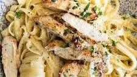

Chicken Alfredo Pasta Recipe

Description
Chicken Alfredo Pasta is a creamy and flavorful Italian dish that combines tender chicken, fettuccine pasta, and a rich Alfredo sauce. It's a comforting and satisfying meal that is loved by pasta enthusiasts.
Ingredients
- 8 ounces fettuccine pasta
- 2 boneless, skinless chicken breasts, sliced
- 2 tablespoons olive oil
- 4 cloves garlic, minced
- 1 cup heavy cream
- 1 cup grated Parmesan cheese
- 1/2 cup unsalted butter
- Salt and pepper to taste
- Chopped fresh parsley for garnish
Steps
- Cook the fettuccine pasta according to the package instructions. Drain and set aside.
- In a large skillet, heat the olive oil over medium-high heat. Add the sliced chicken breasts and cook until golden brown and cooked through. Remove the chicken from the skillet and set aside.
- In the same skillet, add the minced garlic and sauté for about 1 minute until fragrant.
- Reduce the heat to low. Add the heavy cream, grated Parmesan cheese, and unsalted butter to the skillet. Stir continuously until the sauce is smooth and creamy.
- Season the sauce with salt and pepper to taste.
- Add the cooked fettuccine pasta and cooked chicken to the skillet. Toss everything together until the pasta and chicken are well coated with the Alfredo sauce.
- Remove from heat and garnish with chopped fresh parsley.
- Serve hot and enjoy your delicious homemade Chicken Alfredo Pasta!